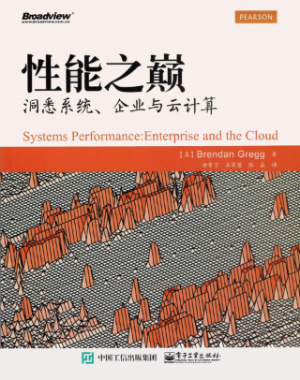
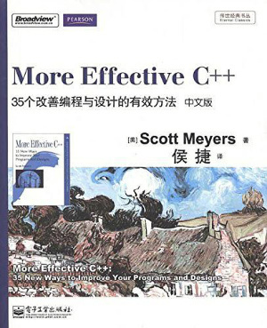
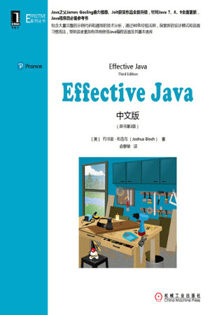
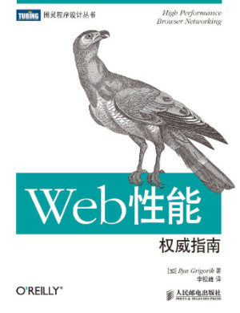
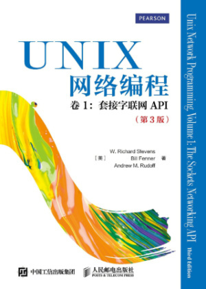

- 00 导读 如何打造高质量的应用？.md.html
- 00 开篇词 焦虑的移动开发者该如何破局？.md.html
- 01 崩溃优化（上）：关于“崩溃”那些事儿.md.html
- 02 崩溃优化（下）：应用崩溃了，你应该如何去分析？.md.html
- 03 内存优化（上）：4GB内存时代，再谈内存优化.md.html
- 04 内存优化（下）：内存优化这件事，应该从哪里着手？.md.html
- 05 卡顿优化（上）：你要掌握的卡顿分析方法.md.html
- 06 卡顿优化（下）：如何监控应用卡顿？.md.html
- 06补充篇 卡顿优化：卡顿现场与卡顿分析.md.html
- 07 启动优化（上）：从启动过程看启动速度优化.md.html
- 08 启动优化（下）：优化启动速度的进阶方法.md.html
- 09 I_O优化（上）：开发工程师必备的I_O优化知识.md.html
- 10 I_O优化（中）：不同I_O方式的使用场景是什么？.md.html
- 11 I_O优化（下）：如何监控线上I_O操作？.md.html
- 12 存储优化（上）：常见的数据存储方法有哪些？.md.html
- 13 存储优化（中）：如何优化数据存储？.md.html
- 14 存储优化（下）：数据库SQLite的使用和优化.md.html
- 15 网络优化（上）：移动开发工程师必备的网络优化知识.md.html
- 16 网络优化（中）：复杂多变的移动网络该如何优化？.md.html
- 17 网络优化（下）：大数据下网络该如何监控？.md.html
- 18 耗电优化（上）：从电量优化的演进看耗电分析.md.html
- 19 耗电优化（下）：耗电的优化方法与线上监控.md.html
- 20 UI 优化（上）：UI 渲染的几个关键概念.md.html
- 21 UI 优化（下）：如何优化 UI 渲染？.md.html
- 22 包体积优化（上）：如何减少安装包大小？.md.html
- 23 包体积优化（下）：资源优化的进阶实践.md.html
- 24 想成为Android高手，你需要先搞定这三个问题.md.html
- 25 如何提升组织与个人的研发效能？.md.html
- 26 关于编译，你需要了解什么？.md.html
- 27 编译插桩的三种方法：AspectJ、ASM、ReDex.md.html
- 28 大数据与AI，如何高效地测试？.md.html
- 29 从每月到每天，如何给版本发布提速？.md.html
- 30 数据评估（上）：如何实现高可用的上报组件？.md.html
- 31 数据评估（下）：什么是大数据平台？.md.html
- 32 线上疑难问题该如何排查和跟踪？.md.html
- 33 做一名有高度的移动开发工程师.md.html
- 34 聊聊重构：优秀的架构都是演进而来的.md.html
- 35 Native Hook 技术，天使还是魔鬼？.md.html
- 36 跨平台开发的现状与应用.md.html
- 37 移动开发新大陆：工作三年半，移动开发转型手游开发.md.html
- 38 移动开发新大陆：Android音视频开发.md.html
- 39 移动开发新大陆： 边缘智能计算的趋势.md.html
- 40 动态化实践，如何选择适合自己的方案？.md.html
- 41 聊聊Flutter，面对层出不穷的新技术该如何跟进？.md.html
- 42 Android开发高手课学习心得.md.html
- Android JVM TI机制详解（内含福利彩蛋）.md.html
- Android工程师的“面试指南”.md.html
- Native下如何获取调用栈？.md.html
- 专栏学得苦？可能你还需要一份配套学习书单.md.html
- 专栏学得苦？可能是方法没找对.md.html
- 程序员修炼之路 设计能力的提升途径.md.html
- 练习Sample跑起来 ASM插桩强化练习.md.html
- 练习Sample跑起来 唯鹿同学的练习手记 第1辑.md.html
- 练习Sample跑起来 唯鹿同学的练习手记 第2辑.md.html
- 练习Sample跑起来 唯鹿同学的练习手记 第3辑.md.html
- 练习Sample跑起来 热点问题答疑第1期.md.html
- 练习Sample跑起来 热点问题答疑第2期.md.html
- 练习Sample跑起来 热点问题答疑第3期.md.html
- 练习Sample跑起来 热点问题答疑第4期.md.html
- 结束语 移动开发的今天和明天.md.html
- 聊聊Framework的学习方法.md.html
- 捐赠
因收到Google相关通知，网站将会择期关闭。相关通知内容
专栏学得苦？可能你还需要一份配套学习书单
你好，我是张绍文。专栏已经发布了一段时间，很多同学在学习专栏时问我，想补充一些基础知识可以参考哪些图书。今天我就结合专栏的编排，给你推荐几本我看过并且对我帮助很大的图书。推荐的书单不在于数量，而在于希望尽可能覆盖Android开发工程师进阶学习的路径，只有掌握牢固的基础知识，才能在进阶的道路上走得平稳。专栏把进阶的各个主题由点到线串联起来，但这背后必然少不了一些基础的、底层的知识进行支撑，而这些经典的图书涵盖的知识点比较全面，即使遇到问题时放在手边也是很好的参考书。
作为一名Android开发工程师，你需要学习一些Linux的基础知识，在做优化时可以有更好的思路。
关于Linux学习，我推荐：

极客时间专栏：Linux性能优化实战
如果想更好地学习虚拟机以及Hook相关的知识，你需要对C++以及编译原理有一定的了解。
关于虚拟机，我推荐：
关于编程语言，我推荐：


其他的知识，例如网络、数据库的一些细分领域，我推荐：


欢迎你点击“请朋友读”，把今天的内容分享给好友，邀请他一起学习。
© 2019 - 2023 Liangliang Lee. Powered by gin and hexo-theme-book.